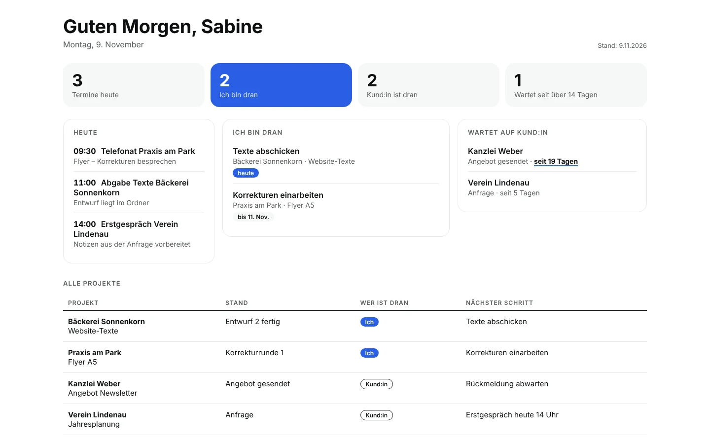
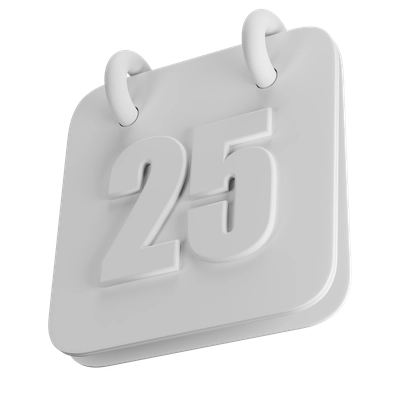
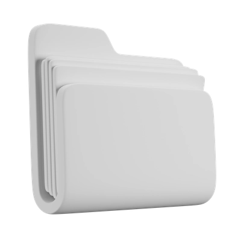
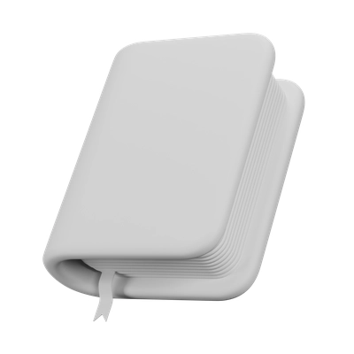
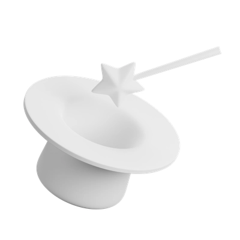
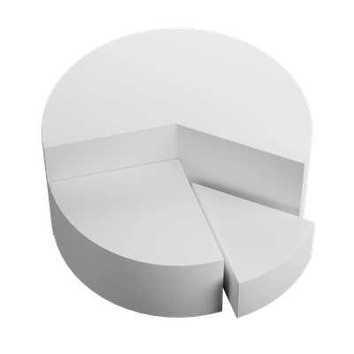
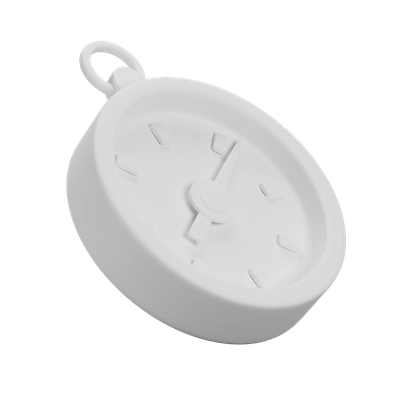
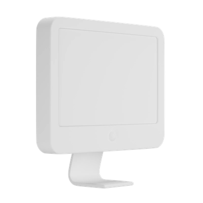

Eine KI, die Ihr Büro kennt.
Ich richte Claude für Sie ein – mit Ihren Projekten, Ihren Abläufen und Ihrem Ton. Dazu ein Projekt-Cockpit, das zeigt, was heute ansteht. In drei Wochen, zum Festpreis.
Erstgespräch anfragen So läuft es
- Festpreis 990 € netto
- Drei Online-Termine
- Ich richte für Sie ein – Passwörter bleiben bei Ihnen
- Für Selbstständige und kleine Büros
Pilotpreis 690 € netto für die ersten drei Aufträge.

Sie klappen den Rechner auf und wissen, was heute zählt.

Drei Termine heute. Mit den Notizen, die Sie dafür brauchen.

Zwei Aufgaben liegen bei Ihnen. Und das Cockpit zeigt: Eine Kundin hat seit 19 Tagen nicht geantwortet.
Die Antwort an die Kanzlei liegt als Entwurf bereit. In Ihrem Ton. Sie lesen, ändern, senden.
Die KI bereitet vor. Entscheiden tun Sie.
Sechs Dinge, die bleiben.

Ihr Arbeitsordner
Eine klare Ordnung für Kund:innen und Projekte, die Sie und Claude gleich verstehen.

Ihre Start-Datei
„So arbeite ich“: Ihre Regeln, Ihr Ton, Ihre Kund:innen. Claude liest sie bei jeder Aufgabe mit.

Drei Arbeitsabläufe
Wiederverwendbare Anleitungen (Skills), zum Beispiel Morgen-Überblick, Projektstand eintragen und Mail-Entwurf.

Ihr Projekt-Cockpit
Eine Seite mit Terminen, offenen Punkten und wer gerade dran ist – Sie oder Ihre Kundin.
Kalender und E-Mail, wenn es passt
Claude liest Termine und Mails und schreibt Entwürfe (Google; andere Anbieter klären wir im Erstgespräch). Für Postfächer mit Kundendaten empfehle ich den Tarif Claude Team.

Handbuch und Einweisung
Ein Handbuch für Ihren Alltag, eine Einweisung ins sichere Arbeiten mit KI mit Teilnahmebestätigung und 14 Tage Fragen per E-Mail.
Ein Gespräch, drei Termine, drei Wochen.
- Schritt01
Erstgespräch.
Wir klären, ob das KI-Arbeits-Setup zu Ihrer Arbeit passt. Danach bekommen Sie einen kurzen Fragebogen.
- Schritt02
Verstehen.
Wie arbeiten Sie heute, was kostet Sie Zeit, wo sind Grenzen? Wir wählen die drei Abläufe, die zuerst entlasten sollen.
- Schritt03
Einrichten.
Ich habe alles vorbereitet und richte es per Fernsteuerung auf Ihrem Rechner ein – dann erledigen wir die erste echte Aufgabe zusammen.
- Schritt04
Feinschliff.
Zwei Wochen später schärfen wir nach. Bis dahin beantworte ich Ihre Fragen per E-Mail.
Ein Festpreis. Alles für den Start.
KI-Arbeits-Setup mit Projekt-Cockpit
990 €netto · Festpreis
Pilotpreis 690 € netto für die ersten drei Aufträge
Für den Pilotpreis bitte ich um ehrliches Feedback – und, wenn Sie mögen, um eine Stimme für meine Website.
Angebot für Selbstständige und Unternehmen; Preise netto zuzüglich Umsatzsteuer. Claude ist ein Produkt von Anthropic; STUDIO AAH! ist unabhängig. Zahlung: die Hälfte mit Auftrag, die Hälfte nach dem Termin „Einrichten“.
Enthalten
- Erstgespräch (20 Minuten) und Fragebogen
- Drei Online-Termine: 90, 90 und 60 Minuten
- Arbeitsordner, Start-Datei und drei Arbeitsabläufe
- Projekt-Cockpit
- Handbuch und Checkliste „Was darf in die KI?“
- Einweisung ins sichere Arbeiten mit KI, mit Teilnahmebestätigung
- 14 Tage Fragen per E-Mail
Nicht enthalten
- Ihr KI-Abo – das buchen und bezahlen Sie direkt beim Anbieter. Welcher Tarif zu Ihren Daten passt, klären wir im Erstgespräch.
- Programmierung eigener Software
- Rechts- oder Datenschutzberatung
- Mehr als drei Abläufe oder eine Team-Schulung – nach Aufwand oder im Paket KI-Einführung
Sie behalten die Kontrolle.

Ich richte es für Sie ein
Im Termin übernehme ich per Fernsteuerung Ihren Bildschirm und richte alles ein. Passwörter tippen Sie selbst ein. Ich speichere keine Zugangsdaten, nichts wird aufgezeichnet.
Erst fragen, dann handeln
Ich richte es so ein, dass Claude Entwürfe vorbereitet und vor jeder Aktion nachfragt. Gesendet wird nur mit Ihrem Klick.
Der passende Tarif
Ich zeige Ihnen, welcher Tarif und welche Einstellungen zu Ihren Daten passen. Gesundheitsdaten und andere besonders geschützte Daten bleiben draußen.
Ich arbeite selbst jeden Tag so.
Ich bin Anna Härtelt, UX/UI-Designerin in Leipzig und seit 2020 selbstständig mit STUDIO AAH!. Mein Studio läuft mit diesem Setup: Projektstand je Kundin, Morgen-Überblick, Entwürfe für Mails und Angebote, ein Cockpit mit allen Terminen.
Als UX-Designerin richte ich es so ein, dass Sie es im Alltag wirklich benutzen.
Häufige Fragen
Was ist das KI-Arbeits-Setup von STUDIO AAH!?
Das KI-Arbeits-Setup ist ein Festpreis-Paket von STUDIO AAH!, in dem Anna Härtelt die KI Claude für Selbstständige und kleine Büros einrichtet. Dazu gehören ein Arbeitsordner, eine Start-Datei mit Ihren Regeln, drei wiederverwendbare Arbeitsabläufe und ein Projekt-Cockpit. Die Einrichtung läuft in drei Online-Terminen über etwa drei Wochen. STUDIO AAH! ist unabhängig und kein Partner von Anthropic, dem Anbieter von Claude.
Für wen ist das KI-Arbeits-Setup gedacht?
Das KI-Arbeits-Setup ist für Selbstständige, Freiberufler:innen und kleine Büros mit bis zu fünf Personen gedacht, die mehrere Kund:innen und Projekte gleichzeitig betreuen. Größere Teams sind im Paket KI-Einführung besser aufgehoben. Wer mit Gesundheitsdaten oder anderen besonders geschützten Daten arbeitet, klärt im Erstgespräch, ob und wie das Setup passt.
Was kostet das KI-Arbeits-Setup?
Das KI-Arbeits-Setup kostet bei STUDIO AAH! 990 € netto zum Festpreis. Für die ersten drei Aufträge gilt ein Pilotpreis von 690 € netto. Das KI-Abo selbst ist nicht enthalten; es wird direkt beim Anbieter gebucht und bezahlt.
Welchen Tarif von Claude brauche ich?
Für das KI-Arbeits-Setup braucht es einen bezahlten Tarif von Claude, den Sie direkt beim Anbieter Anthropic buchen. Arbeiten Sie nur mit eigenen Texten und anonymisierten Daten, reicht der Tarif Pro – das Training mit Ihren Chats schalten wir gemeinsam aus. Soll Claude Ihr Geschäftspostfach oder Kundendaten lesen, empfiehlt Anna Härtelt Claude Team (ab zwei Plätzen): Dort gilt ein Vertrag zur Auftragsverarbeitung, und Anthropic nutzt Ihre Eingaben standardmäßig nicht zum Training. Ob Ihre Datenverarbeitung zulässig ist, entscheiden Sie bzw. Ihre Datenschutzberatung.
Wie lange dauert das KI-Arbeits-Setup?
Das KI-Arbeits-Setup dauert vom Erstgespräch bis zum Feinschliff etwa drei Wochen. Sie investieren drei Online-Termine von 90, 90 und 60 Minuten und etwa 15 Minuten für einen Fragebogen.
Bekommt STUDIO AAH! Zugriff auf meine Konten und Daten?
Nur im Termin und nur so weit nötig: Sie geben Anna Härtelt per Fernsteuerung Zugriff auf Ihren Bildschirm, und sie richtet alles ein. Passwörter tippen Sie selbst ein. Zugangsdaten werden nicht gespeichert, die Termine nicht aufgezeichnet. Auf Wunsch gibt es einen Vertrag zur Auftragsverarbeitung.
Geht das KI-Arbeits-Setup auch mit ChatGPT oder Microsoft Copilot?
Das KI-Arbeits-Setup ist für Claude von Anthropic gebaut, weil Anna Härtelt selbst täglich damit arbeitet. Ob es sich auf ChatGPT oder Copilot übertragen lässt, klären wir im Erstgespräch. Passt es nicht, sagt sie Ihnen das ehrlich.
Was passiert nach dem Termin „Einrichten“?
Nach dem Termin „Einrichten“ beantwortet Anna Härtelt 14 Tage lang Ihre Fragen per E-Mail, und etwa zwei Wochen später folgt der Termin „Feinschliff“. Weitere Abläufe, Termine oder eine Team-Schulung gibt es danach nach Aufwand.
Gibt es eine Bestätigung zur KI-Kompetenz?
Ja. Zum KI-Arbeits-Setup gehört eine Einweisung ins sichere Arbeiten mit KI: wie Claude arbeitet, wo die Grenzen liegen, welche Daten hinein dürfen und wie Sie Ergebnisse prüfen. Sie erhalten eine Teilnahmebestätigung, die Sie als Maßnahme zur KI-Kompetenz nach Artikel 4 der KI-Verordnung ablegen können. Ein Zertifikat ist das nicht.
Ist das KI-Arbeits-Setup eine Datenschutz- oder Rechtsberatung?
Nein. Sie bekommen eine Checkliste, welche Daten in die KI dürfen, und wir prüfen gemeinsam die Einstellungen Ihres Kontos. Für die Datenschutzpflichten Ihres Unternehmens bleiben Sie selbst verantwortlich; im Zweifel hilft eine Fachperson für Datenschutz.
Erstgespräch anfragen.
In 20 Minuten klären wir, ob das KI-Arbeits-Setup zu Ihrer Arbeit passt. Ich melde mich mit Terminvorschlägen per E-Mail.
- Unverbindlich
- Online
- Kein Verkaufsdruck